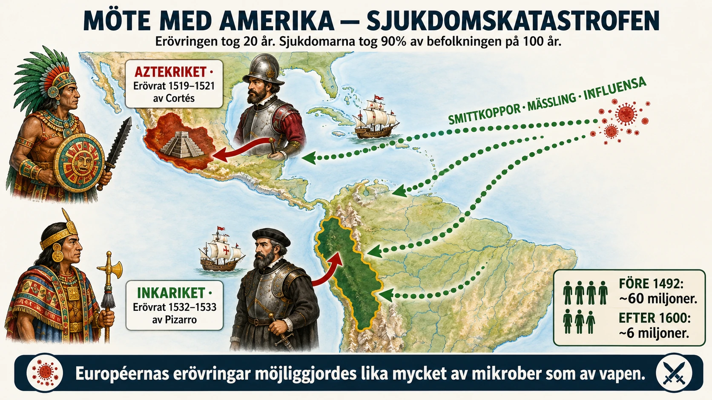
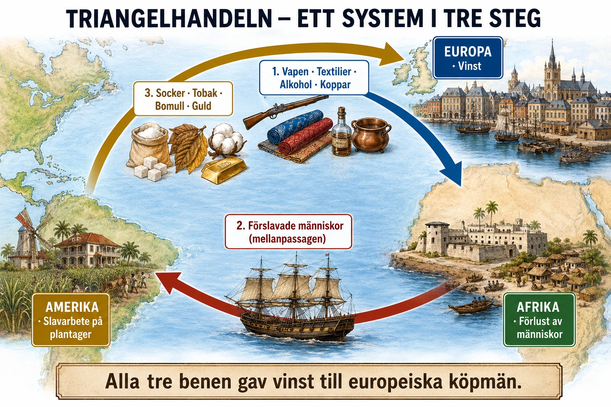
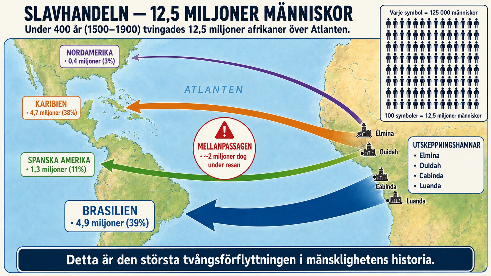
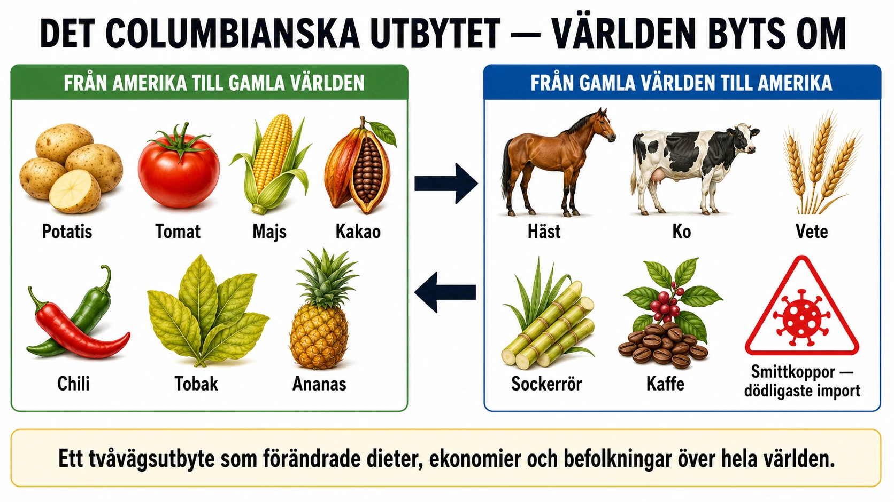
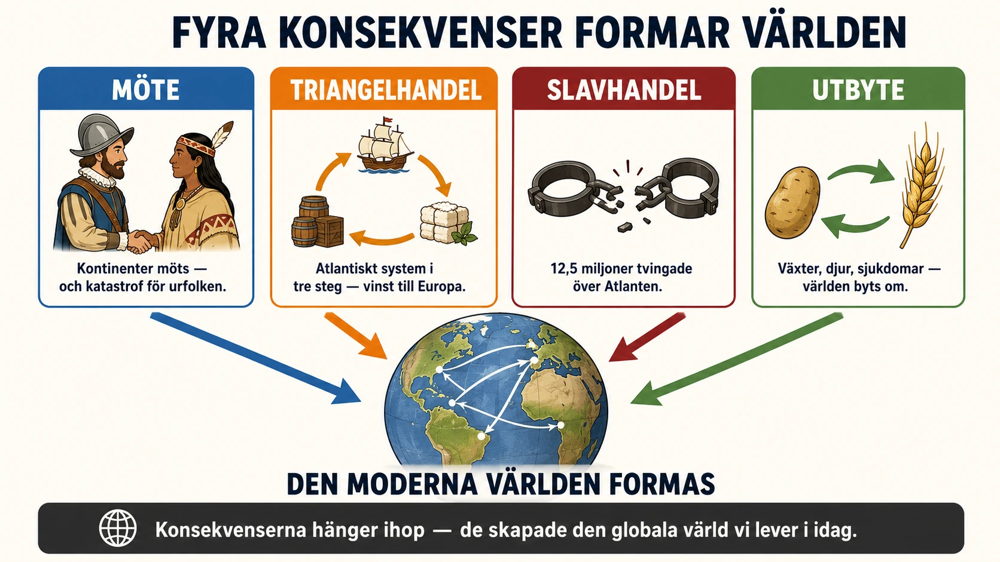

— hur mötet med Amerika förändrade världen —
Titta på kartan innan du läser vidare:

I §A av avsnitt 1 läste du om hur européerna kom till Amerika. I orsaksavsnittet (§B) såg du vad som drev dem dit. Nu ska vi titta på konsekvenserna — vad mötet mellan två världar fick för följder.
Vi börjar med själva mötet.
När européerna kom till Amerika i slutet av 1400-talet möttes två världar som länge hade utvecklats nästan helt utan kontakt med varandra. I Amerika fanns stora civilisationer. Aztekerna hade sin huvudstad i staden Tenochtitlán i nuvarande Mexiko. Inkariket sträckte sig längs Anderna i Sydamerika. Det var alltså inte så att européerna kom till "tomma" landområden. De kom till platser där människor redan levde, odlade, byggde, styrde och tänkte.
De spanska erövrarna kallades conquistadorer, vilket betyder ungefär "erövrare". De mest kända är Hernán Cortés, som besegrade aztekerna, och Francisco Pizarro, som besegrade inkariket.
Conquistadorerna var ofta små grupper av soldater, men de hade flera fördelar. De hade hästar, stålrustningar, svärd och skjutvapen. De utnyttjade också konflikter som redan fanns i Amerika. Många folkgrupper var missnöjda med aztekernas eller inkas makt och valde därför att samarbeta med spanjorerna.
Den allra största katastrofen för ursprungsbefolkningen kom genom sjukdomar. Européerna förde med sig smittkoppor, mässling och influensa. I Europa, Afrika och Asien hade människor levt med dessa sjukdomar länge. Därför hade många ett visst immunförsvar.
Men i Amerika hade dessa sjukdomar inte funnits tidigare. Ursprungsbefolkningen saknade skydd. Smittkoppor spreds snabbt och dödade enorma mängder människor. I vissa områden dog en mycket stor del av befolkningen på bara några årtionden.
Sjukdomarna gjorde också motståndet svagare. När människor dog försvann ledare, krigare, bönder och präster. Därför kunde européerna ta kontroll över områden som annars hade varit mycket svårare att erövra.
Spanjorerna såg ofta Amerika som en plats där de kunde vinna rikedom. Ursprungsbefolkningen tvingades arbeta i gruvor och på plantager. Många behandlades mycket brutalt.
Men alla européer höll inte med. En viktig kritiker var den spanske prästen Bartolomé de las Casas. Han hade själv sett hur ursprungsbefolkningen behandlades och protesterade mot våldet. Las Casas menade att människorna i Amerika var riktiga människor med själ, förnuft och rättigheter.
Las Casas var viktig eftersom han visade att det redan på 1500-talet fanns människor som ifrågasatte erövringen. Han stoppade inte systemet, men hans kritik blev ett tidigt exempel på en större fråga: Har ett mäktigt land rätt att erövra andra folk?
I §A av avsnitt 1 läste du om hur européerna kom till Amerika. I orsaksavsnittet (§B) såg du vad som drev dem dit. Nu ska vi titta på konsekvenserna — vad mötet mellan två världar fick för följder för båda sidor.
Vi börjar med själva mötet och dess första konsekvenser för Amerikas ursprungsbefolkning.
När européerna kom till Amerika i slutet av 1400-talet och början av 1500-talet möttes två världar som länge hade utvecklats nästan helt utan kontakt med varandra. I Amerika fanns stora civilisationer, mäktiga städer, jordbruk, handel, religioner och avancerade samhällssystem. Aztekerna hade sitt centrum i staden Tenochtitlán i nuvarande Mexiko. Inkariket sträckte sig längs Anderna i Sydamerika. Det var alltså inte så att européerna kom till "tomma" landområden. De kom till platser där människor redan levde, odlade, byggde, styrde och tänkte.
De spanska erövrarna kallades conquistadorer, vilket betyder ungefär "erövrare". De mest kända är Hernán Cortés, som besegrade aztekerna 1521, och Francisco Pizarro, som besegrade inkariket på 1530-talet.
Conquistadorerna var ofta små grupper av soldater, men de hade flera fördelar. De hade hästar, stålrustningar, svärd, skjutvapen och erfarenhet av krig. Men den viktigaste orsaken till att de kunde besegra så stora riken var inte bara deras vapen. De utnyttjade också konflikter som redan fanns i Amerika. Många folkgrupper var missnöjda med aztekernas eller inkas makt och valde därför att samarbeta med spanjorerna.
Den allra största katastrofen för ursprungsbefolkningen kom genom sjukdomar. Européerna förde med sig sjukdomar som smittkoppor, mässling och influensa. I Europa, Afrika och Asien hade människor levt med dessa sjukdomar under lång tid. Därför hade många ett visst immunförsvar. Men i Amerika hade dessa sjukdomar inte funnits tidigare. Ursprungsbefolkningen saknade därför skydd. Smittkoppor spreds snabbt och dödade enorma mängder människor. I vissa områden dog en mycket stor del av befolkningen på bara några årtionden.
Sjukdomarna gjorde också motståndet svagare. När människor dog försvann ledare, krigare, bönder, hantverkare och präster. Familjer slogs sönder. Jordbruket stördes. Samhällen förlorade sin struktur. Därför kunde européerna ta kontroll över områden som annars hade varit mycket svårare att erövra.
Detta är en viktig pedagogisk poäng. När vi läser om hur 500 spanjorer "besegrade" Aztekriket med miljoner invånare är det lätt att tänka att det berodde på spansk militär överlägsenhet. Men en stor del av aztekerna dog innan de ens hade sett en spanjor — av sjukdomar som spridits från de första kontakterna i Karibien.
Spanjorerna såg ofta Amerika som en plats där de kunde vinna rikedom och ära. De letade efter guld, silver och mark. Ursprungsbefolkningen tvingades arbeta i gruvor, på plantager och i jordbruk. Många behandlades mycket brutalt. Detta försvarades ibland med att européerna ansåg sig ha rätt att sprida kristendomen och "civilisera" människor som de såg som underlägsna.
Men alla européer höll inte med. En viktig kritiker var den spanske prästen Bartolomé de las Casas (1484–1566). Han hade själv sett hur ursprungsbefolkningen behandlades och protesterade mot våldet. Las Casas menade att människorna i Amerika var riktiga människor med själ, förnuft och rättigheter. Han skrev texter där han beskrev spanjorernas övergrepp och försökte påverka kungamakten att stoppa brutaliteten.
Las Casas var viktig eftersom han visade att det redan på 1500-talet fanns människor som ifrågasatte erövringen. Samtidigt ska man komma ihåg att han inte stoppade systemet. Europas kolonisering fortsatte. Men hans kritik blev ett tidigt exempel på en större fråga som skulle följa hela kolonialismen: Har ett mäktigt land rätt att erövra andra folk, ta deras mark och bestämma över deras liv?
Mötet med Amerika blev både ett kulturmöte och en katastrof. För européerna öppnades nya möjligheter till rikedom, handel och makt. För många ursprungsfolk innebar mötet sjukdomar, tvångsarbete, förlorad mark, förstörda samhällen och minskad självständighet.
En enkel orsakskedja: Européerna kommer till Amerika → conquistadorer erövrar områden → sjukdomar som smittkoppor sprids → ursprungsbefolkningen minskar kraftigt → Spanien och andra europeiska länder tar kontroll över stora områden.
Innan vi går in på conquistadorerna och Las Casas är det värt att stanna vid en siffra. När Columbus seglade över Atlanten 1492 fanns det troligen mellan 50 och 100 miljoner människor i Amerika. Det är ungefär lika många som bodde i hela Europa vid samma tid.
Hundra år senare, omkring år 1600, var ungefär 90 procent av denna befolkning död.
Detta är en av de största befolkningskatastroferna i mänsklighetens historia. Det är större än digerdöden. Det är jämförbart med de värsta krigen och hungersnödarna i världshistorien.
Och det viktiga är: detta hände i en värld där spanjorerna och portugiserna fortfarande bara kontrollerade smala kustremsor av kontinenten. Sjukdomarna spreds snabbare än vad någon armé hade kunnat göra. Smittade människor som flydde tog smittan med sig in i områden som ingen europé ännu hade besökt. Hela civilisationer kollapsade utan att veta varför.
Detta är den verkliga storyn om "mötet med Amerika". Allt annat — conquistadorerna, las Casas, kolonialsystemen — händer på toppen av denna katastrof.
För att förstå hur djupgående detta var, låt oss titta närmare på Aztekriket.
Aztekerna var inte ett primitivt folk. Deras huvudstad Tenochtitlán låg på en ö i sjön Texcoco — den ligger nu under dagens Mexico City. Staden hade ungefär 200 000 invånare när Cortés kom dit 1519. Vid samma tid hade Paris omkring 200 000 och London omkring 60 000. Tenochtitlán var alltså en av världens största städer.
Staden hade akvedukter som förde rent vatten. Den hade flytande trädgårdar där grönsaker odlades. Den hade marknader, tempel, palats och pyramider. När Cortés män först såg den skrev de att de trodde att de drömde — att en så stor och välorganiserad stad inte kunde existera.
Aztekriket sträckte sig över stora delar av dagens centrala Mexiko. Det var ett mäktigt rike med tribut-system, religiösa traditioner och en rik kultur. Det hade också fiender — flera folkgrupper som aztekerna hade erövrat var redo att göra uppror.
Cortés hade ungefär 500 män när han landsteg i Mexiko 1519. Aztekriket hade troligen 5–10 miljoner invånare. Hur kunde han vinna?
Svaret är att han inte vann ensam.
1. Allianser med ursprungsbefolkningen. Cortés allierade sig med Tlaxcalanerna och andra folkgrupper som var fientliga mot aztekerna. När han marscherade mot Tenochtitlán hade han med sig tiotusentals lokala krigare. De spanska soldaterna var en liten minoritet av den verkliga armén.
2. La Malinche — kvinnan som tolkade. En central person var La Malinche (även känd som Doña Marina), en kvinna från en lokal folkgrupp som blev Cortés tolk och rådgivare. Hon talade både Náhuatl (aztekiskt språk) och Maya, och hon lärde sig snabbt spanska. Utan henne hade Cortés inte kunnat förhandla, alliera sig eller förstå vad som hände omkring honom. Hennes roll är komplicerad — i Mexiko har hon ibland setts som en förrädare, ibland som ett offer för omständigheter, ibland som en överlevare.
3. Smittkoppor. Detta är den centrala faktorn. När Cortés första gång angrep Tenochtitlán 1520 blev han tillbakaslagen. Men medan han retirerade och förberedde ett nytt anfall bröt en smittkoppsepidemi ut i staden. Sjukdomen hade kommit dit med en infekterad spansk soldat. Inom månader hade hälften av Tenochtitláns befolkning dött, inklusive den nya aztekiske kejsaren Cuitláhuac. När Cortés återvände 1521 mötte han en försvagad och decimerad stad.
Aztekriket föll alltså inte på grund av spansk militär överlägsenhet. Det föll på grund av en kombination av allianser med fiender och en biologisk katastrof.
Inkariket föll på liknande sätt. När Pizarro kom till Peru 1532 hade smittkoppor redan dödat den inkaiske kejsaren Huayna Capac och hans efterträdare. Inkariket var mitt i ett inbördeskrig mellan kejsarens två söner — Atahualpa och Huáscar. Pizarro utnyttjade kriget och tog Atahualpa till fånga.
Detta är ett mönster. Européerna kom in i samhällen som redan var skakade av sjukdomar de inte kände orsaken till. Pizzarros 168 män hade aldrig kunnat erövra ett intakt Inkarike. De kunde göra det därför att riket redan var sönderbrutet.
Efter erövringen införde Spanien ett system som hette encomienda. Spanska soldater och bosättare fick rätt att kräva tribut och tvångsarbete från ursprungsbefolkningen i ett givet område. I gengäld skulle de "skydda" och "kristna" dem.
I praktiken blev det ett system av slavarbete i allt annat än namn. Människor tvingades arbeta i gruvor (särskilt silvergruvorna i Potosí i Bolivia, en av världens största gruvor) och på plantager. Förhållandena var brutala. Många dog av överarbete, undernäring och fortsatta sjukdomar.
Bartolomé de las Casas (1484–1566) hade själv varit encomendero — alltså en spansk markägare med rätt att tvångsanvända ursprungsbefolkning. Men på 1510-talet började han ifrågasätta systemet. Han läste en predikan av en dominikansk munk som chockerade honom. Hur kunde kristna behandla människor på detta sätt?
Las Casas tillbringade resten av sitt liv som motståndare till encomienda och förtryck. Han blev själv dominikansk munk. Han skrev sin berömda "Brevísima relación de la destrucción de las Indias" (1542) — "Kort berättelse om förstörelsen av Indierna" — som beskrev övergreppen i detalj. Boken översattes till många språk och spreds över Europa.
Las Casas argumenterade för en revolutionär idé: att alla människor är rationella varelser med själ och förnuft, oavsett kultur eller hudfärg. Det var inte en självklarhet på 1500-talet. Många européer trodde att människor i Amerika och Afrika var något annat — en lägre form av människa, eller kanske inte människor alls.
Las Casas vann en stor debatt 1550–1551 i staden Valladolid i Spanien. Han konfronterade där filosofen Juan Ginés de Sepúlveda, som argumenterade att ursprungsbefolkningen var "naturliga slavar" enligt Aristoteles. Debatten avgjordes inte slutgiltigt, men Las Casas position blev officiell spansk doktrin.
Spanien antog Nya lagarna 1542 som skulle skydda ursprungsbefolkningen. Lagarna gjorde i praktiken inte den stora skillnad Las Casas hoppades på — kolonisterna ignorerade dem ofta. Men de visade att kritiken hade nått ända till kronan.
Vad ska du ta med dig från §A?
På ena sidan: en katastrofal befolkningsförlust. Tiotalsmiljoner människor dog. Civilisationer kollapsade. Kulturer förlorade hela generationer av kunskap. Detta är historiens mörka centrum.
På andra sidan: motstånd och kritik fanns från början. Las Casas och andra protesterade. Ursprungsbefolkningen själva motsatte sig kolonisationen på många sätt — flykt, uppror, kulturöverlevnad. Vi ska aldrig glömma att människor inte var passiva offer, även när de var överväldigade av krafter de inte förstod.
Och så denna sista tanke: det är inte spanjorerna ensamma som "vann" över Amerika. Det är en kombination av allianser, sjukdomar, slump och brutalitet. Om Huayna Capac inte hade dött av smittkoppor, om aztekerna inte hade haft så många fiender, om La Malinche inte hade kunnat tolka — då hade historien sett mycket annorlunda ut.
Stora historiska händelser har sällan enkla orsaker. Det är därför vi behöver analysera dem.
Titta på kartan innan du läser vidare:

När européerna hade skapat kolonier i Amerika växte ett nytt handelssystem fram över Atlanten. Det kallas triangelhandeln, eftersom handeln gick mellan tre områden: Europa, Afrika och Amerika. Det var inte alltid en exakt triangel, men modellen hjälper oss att förstå hur ekonomin fungerade.
Steg 1: Från Europa till Afrika. Från Europa skeppades varor till Afrika. Det kunde vara tyg, metallvaror, vapen och alkohol. Dessa varor användes för att köpa människor som hade tagits till fånga i Afrika.
Steg 2: Från Afrika till Amerika. Från Afrika fördes förslavade människor över Atlanten till Amerika. Denna resa kallas ofta Middle Passage, eller mellanpassagen. Den var fruktansvärd. Människor packades tätt i slavskepp under omänskliga förhållanden. Många dog av sjukdomar, svält och våld innan de ens nådde Amerika.
Steg 3: Från Amerika till Europa. I Amerika såldes de förslavade människorna som arbetskraft. De tvingades arbeta på plantager med socker, tobak, bomull och kaffe. Sedan skickades dessa råvaror tillbaka till Europa. I Europa såldes de med vinst.
Pengarna kunde sedan användas till nya handelsresor, fler fartyg och mer investeringar. På så sätt blev triangelhandeln ett ekonomiskt kretslopp som kunde fortsätta och växa.
Triangelhandeln bidrog till Europas ekonomiska utveckling. Hamnstäder, handelskompanier, banker och skeppsbyggare tjänade pengar på systemet. Det koloniala systemet blev viktigt inte bara för plantageägarna i Amerika, utan för hela Europas ekonomi.
Men denna ekonomiska framgång byggde på våld och tvång. Det var människor som gjordes till handelsvaror. Deras arbete skapade rikedom åt andra, medan de själva förlorade sin frihet, sina familjer och ofta sina liv. Därför måste triangelhandeln förstås både som ett ekonomiskt system och som en mänsklig katastrof.
När européerna hade skapat kolonier i Amerika växte ett nytt handelssystem fram över Atlanten. Det brukar kallas triangelhandeln, eftersom handeln gick mellan tre områden: Europa, Afrika och Amerika. Det var inte en exakt triangel varje gång, men modellen hjälper oss att förstå hur ekonomin fungerade.
Från Europa skeppades varor till Afrika. Det kunde vara tyg, metallvaror, vapen, alkohol och andra handelsprodukter. Dessa varor användes för att köpa människor som hade tagits till fånga i Afrika. Många av fångarna hade tillfångatagits genom krig, räder eller genom afrikanska makthavare och handelsmän som samarbetade med europeiska slavhandlare. Europas roll var avgörande eftersom efterfrågan på arbetskraft i kolonierna gjorde handeln mycket lönsam.
Från Afrika fördes förslavade människor över Atlanten till Amerika. Denna resa kallas ofta Middle Passage, eller mellanpassagen. Den var fruktansvärd. Människor packades tätt i slavskepp under omänskliga förhållanden. Många dog av sjukdomar, svält, våld och förtvivlan innan de ens nådde Amerika. Mer om denna resa kommer i nästa text om slavhandeln.
I Amerika såldes de förslavade människorna som arbetskraft. De tvingades arbeta på plantager, särskilt med socker, tobak, bomull och kaffe. Plantagerna var stora jordbruk som producerade varor för export. Arbetet var hårt, farligt och kontrollerades med våld. De som ägde plantagerna kunde tjäna stora pengar eftersom de inte betalade lön till de förslavade arbetarna.
Från Amerika skickades sedan kolonialvaror tillbaka till Europa. Socker, tobak, bomull, kaffe och andra råvaror blev eftertraktade. I Europa såldes de med vinst. Pengarna kunde sedan användas till nya handelsresor, fler fartyg, fler varor och mer investeringar. På så sätt blev triangelhandeln ett ekonomiskt kretslopp.
Det viktiga är att förstå mekanismen. Europeiska köpmän investerade pengar i varor och fartyg. Varorna byttes mot människor i Afrika. Människorna såldes i Amerika. Deras tvångsarbete producerade råvaror. Råvarorna såldes i Europa. Vinsten gjorde att systemet kunde fortsätta och växa.
Triangelhandeln bidrog till Europas ekonomiska utveckling. Hamnstäder som Liverpool, Nantes, Bristol och Amsterdam växte snabbt tack vare slavhandeln. Handelskompanier, banker, försäkringsbolag och skeppsbyggare kunde tjäna pengar på systemet. Det koloniala systemet blev alltså inte bara viktigt för plantageägarna i Amerika. Det påverkade hela Europas ekonomi.
Detta är viktigt att förstå. När vi senare läser om industriella revolutionen och Englands ekonomiska framgångar är en del av bakgrunden att England var en av de länder som tjänade mest på triangelhandeln. Pengar från slavhandel investerades i fabriker och nya industrier.
Men denna ekonomiska framgång byggde på våld och tvång. Det var människor som gjordes till handelsvaror. Deras arbete skapade rikedom åt andra, medan de själva förlorade sin frihet, sina familjer och ofta sina liv. Därför måste triangelhandeln förstås både som ett ekonomiskt system och som en mänsklig katastrof.
I nästa text (§C) tittar vi närmare på slavhandeln — den mänskliga sidan av detta system.
En enkel orsakskedja: Kolonierna behöver billig arbetskraft → europeiska handelsmän köper förslavade människor i Afrika → de förs till Amerika och tvingas arbeta på plantager → råvaror skickas till Europa → europeiska köpmän och stater tjänar stora pengar.
"Triangelhandeln" är en bra pedagogisk modell. Den hjälper oss att se hur tre kontinenter — Europa, Afrika, Amerika — knöts ihop i ett ekonomiskt system. Modellen gör det komplicerade enkelt.
Men varje modell har också gränser. I verkligheten var triangelhandeln aldrig en perfekt triangel. Skeppen seglade ofta i mer komplexa rutter. Vissa skepp gjorde aldrig hela "triangeln" utan handlade bara mellan två platser. Många fartyg lastade och lossade flera gånger på vägen.
Det är bra att veta. Modellen är ett verktyg för att förstå, inte en exakt karta över verkligheten.
Det är värt att stanna vid frågan: varför uppstod triangelhandeln just under denna tid? Slavhandel hade funnits i världen i tusentals år. Atlantisk fjärrhandel hade funnits sedan 1500-talet. Varför växte just denna kombination så enormt under 1600- och 1700-talet?
Svaret är socker. När européerna börjat odla sockerrör i Amerika — först på Karibiska öar som Hispaniola och Jamaica, sedan i Brasilien — upptäckte de att efterfrågan i Europa var nästan oändlig. Människor älskade socker. Det började konsumeras i ofantliga mängder. Te (från Kina), kaffe (från Etiopien och Yemen) och kakao (från Amerika) — alla nya drycker i Europa under 1600-talet — kunde sötas med socker. Sockerkonsumtionen i England gick från 2 kg per person och år på 1690-talet till 8 kg per person och år på 1780-talet.
Sockerrör krävde enormt mycket arbetskraft. Det måste skördas snabbt när det är moget, processas omedelbart, och hela odlingen är fysiskt brutal. Inga europeiska bönder ville göra detta arbete frivilligt. Ursprungsbefolkningen i Amerika hade dött i massor av sjukdomar. Lösningen blev — i européernas ögon — att hämta arbetare från Afrika.
På samma sätt växte efterfrågan på bomull, kaffe, tobak och senare risodling. Plantagesystemet var en industri. Och industrier behöver arbetskraft.
För att verkligen förstå triangelhandeln måste vi titta på vilka aktörer som var inblandade och vad var och en tjänade på det.
Europeiska köpmän — investerade pengar i skepp och varor. Tog stora risker (skeppsförluster, sjukdom på besättningen). Kunde tjäna 10-30% vinst per resa. Många blev oerhört rika.
Skeppsbyggare — i Liverpool, Bristol, Nantes och andra hamnstäder byggdes specialdesignade slavskepp. Hela industrin utvecklades.
Bankirer — finansierade resorna och tog ut räntor. Behövdes eftersom enskilda köpmän sällan hade nog kapital för ett helt skepp.
Försäkringsbolag — för första gången i världshistorien blev försäkring en stor affär. Skepp och deras "last" (inklusive människor) kunde försäkras.
Afrikanska kungar och köpmän — sålde slavar till européerna mot guld, vapen, tyg och alkohol. Vissa afrikanska kungariken blev mycket rika. Andra blev offer för andra rikens jakt på slavar. (Detta är komplicerat — se djupdykning om slavhandeln i Afrika.)
Plantageägare i Amerika — köpte slavar och tjänade enorma pengar på sockerproduktionen. Många plantageägare blev miljonärer i dåtidens mått.
Europeiska kungar och regeringar — fick skatter och tullar från handeln. Det fanns en stark statlig drivkraft att stödja och försvara triangelhandeln.
Den enda gruppen som inte tjänade på systemet var de förslavade människorna själva. Och även för fritt arbete i Europa var triangelhandeln dålig — den höll lönerna nere genom att tillgången på (slav-)arbetskraft var hög.
Mellan 1500 och 1900 fördes ungefär 12,5 miljoner afrikaner över Atlanten som slavar. Av dessa dog ungefär 1,8 miljoner under själva resan. Ungefär 10,7 miljoner anlände till Amerika. Detta är de bästa uppskattningarna historiker har idag.
För att sätta detta i perspektiv:
Och detta var människor med namn, familjer, språk, drömmar. Inte abstrakta siffror.
Triangelhandeln byggde ekonomier. När den avskaffades på 1800-talet (Storbritannien förbjöd slavhandeln 1807, USA 1808, Brasilien 1850) hade hundratals år av handel skapat:
Triangelhandeln var Sveriges första kontakt med slavhandeln (Sverige hade en kort period av karibisk kolonialism på 1700-talet, men aldrig stor). För Europa som helhet var den dock fundamental.
Det är värt att komma ihåg två saker:
1. Det här var inte slumpvis. Triangelhandeln var inte ett ofrivilligt resultat av globalisering. Det var ett medvetet system byggt och försvarat av människor. Köpmän, kungar, präster, plantageägare — alla visste vad de gjorde. Las Casas och andra hade börjat protestera redan på 1500-talet.
2. Effekterna lever kvar. Den ojämlikhet mellan kontinenter som vi ser idag — Europa rikare än Afrika, USA byggt med svart arbetskraft, Karibien och Latinamerika ekonomiskt beroende av handelsmönster som etablerades då — har sina rötter i triangelhandeln. Att förstå dagens värld kräver att man förstår denna historia.
I nästa text går vi djupare in i den mänskliga sidan av detta system. Vi tittar på slavhandeln — vad den verkligen innebar för människorna som drabbades.
Titta på kartan innan du läser vidare:

Slavhandel hade funnits på olika platser i världen långt före upptäcktsresorna. Men den transatlantiska slavhandeln blev något särskilt stort och brutalt. Från 1500-talet till 1800-talet fördes miljontals afrikaner över Atlanten till Amerika. De behandlades inte som fria människor utan som egendom som kunde köpas och säljas.
Bakgrunden var Europas kolonier i Amerika. Där ville européerna producera varor som kunde säljas med stor vinst: socker, tobak, bomull och kaffe. För att odla och skörda dessa varor behövdes mycket arbetskraft.
Först försökte européerna ofta använda ursprungsbefolkningen som tvångsarbetare. Men många dog av sjukdomar, krig och hårda arbetsvillkor. Då ökade efterfrågan på arbetskraft från Afrika.
Afrikaner togs till fånga på olika sätt. En del fångades i krig mellan afrikanska riken. Andra kidnappades eller såldes genom handelsnätverk. Europeiska slavhandlare byggde fort längs Afrikas kuster där människor hölls fångna innan de skeppades över Atlanten.
Slavhandeln var ett system där både europeiska och afrikanska aktörer kunde vara inblandade. Men den stora drivkraften var Europas koloniala ekonomi och efterfrågan på billig arbetskraft.
Resan över Atlanten var en av de mest fruktansvärda delarna av slavhandeln. Människor kedjades fast, packades tätt och saknade nästan helt kontroll över sina liv. De fick för lite mat, för lite vatten och levde i smutsiga utrymmen där sjukdomar spreds snabbt. Många dog under resan. De som överlevde såldes på slavmarknader i Amerika.
På plantagerna väntade ett liv av tvångsarbete. De förslavade arbetade långa dagar under hård övervakning. Våld användes för att tvinga människor att lyda. Familjer splittrades när människor såldes vidare. Barn kunde födas in i slaveri.
Det är viktigt att förstå slavhandeln som mer än bara "arbetskraft". Det handlade om människor med namn, familjer, språk, minnen och drömmar. De rycktes upp ur sina samhällen och tvingades leva under extremt våld.
Många gjorde motstånd: genom att fly, vägra arbeta, bevara språk och kultur, skapa gemenskaper eller göra uppror. Motståndet visar att de förslavade aldrig bara var passiva offer. De kämpade på olika sätt för sin värdighet och frihet.
Slavhandeln är därför en av de mörkaste konsekvenserna av upptäcktsresorna.
Slavhandel hade funnits på olika platser i världen långt före upptäcktsresorna. Men den transatlantiska slavhandeln blev något särskilt stort och brutalt. Från 1500-talet till 1800-talet fördes miljontals afrikaner över Atlanten till Amerika. De behandlades inte som fria människor utan som egendom som kunde köpas och säljas.
Bakgrunden var Europas kolonier i Amerika. Där ville européerna producera varor som kunde säljas med stor vinst: socker, tobak, bomull, kaffe och senare även andra råvaror. För att odla och skörda dessa varor behövdes mycket arbetskraft.
Först försökte européerna ofta använda ursprungsbefolkningen som tvångsarbetare. Men många dog av sjukdomar, krig och hårda arbetsvillkor (se §A). Då ökade efterfrågan på arbetskraft från Afrika.
Afrikaner togs till fånga på olika sätt. En del fångades i krig mellan afrikanska riken och grupper. Andra kidnappades eller såldes genom handelsnätverk. Europeiska slavhandlare byggde fort längs Afrikas kuster där människor hölls fångna innan de skeppades över Atlanten. Ett av de mest kända forten var Elmina vid Guldkusten (dagens Ghana), ursprungligen byggt av portugiserna 1482.
Detta visar att slavhandeln var ett system där både europeiska och afrikanska aktörer kunde vara inblandade. Den stora drivkraften var Europas koloniala ekonomi och efterfrågan på billig arbetskraft. (Mer om afrikansk roll i slavhandeln i djupdykningen om slavhandeln i Afrika.)
Resan över Atlanten var en av de mest fruktansvärda delarna av slavhandeln. Människor kedjades fast, packades tätt och saknade nästan helt kontroll över sina liv. De fick för lite mat, för lite vatten och levde i smutsiga utrymmen där sjukdomar spreds snabbt. Många dog under resan. Av de cirka 12,5 miljoner människor som tvingades ombord på slavskepp dog ungefär 1,8 miljoner under själva resan.
De som överlevde såldes på slavmarknader i Amerika. Familjer kunde splittras vid försäljningen — föräldrar kunde säljas till en plantage, barn till en annan. Detta var en del av systemets brutalitet.
På plantagerna väntade ett liv av tvångsarbete. De förslavade arbetade långa dagar under hård övervakning. Våld användes för att tvinga människor att lyda. Familjer splittrades när människor såldes vidare. Barn kunde födas in i slaveri och betraktades då också som ägarens egendom. Det gjorde slaveriet till ett system som inte bara utnyttjade en individ, utan hela generationer.
Förhållandena varierade. På sockerplantagerna i Karibien var dödligheten så hög att slavarna ofta dog inom några år — plantageägarna räknade kallt med att köpa nya snarare än att ge slavarna förhållanden som höll dem vid liv. På bomullsplantagerna i USA:s södra stater levde många slavar längre, men förhållandena var fortfarande brutala.
Slavhandeln slog också hårt mot samhällen i Afrika. Miljontals människor fördes bort. Vissa områden drabbades av otrygghet, krig och ekonomisk förändring eftersom människor blev en handelsvara. Demografiska förändringar — främst männen togs som slavar, vilket skapade obalans i befolkningen — påverkade hela kontinentens utveckling.
Samtidigt blev Europa rikare. Vinster från slavhandel och plantageproduktion bidrog till handel, industri och kapitalbildning i flera europeiska länder. Detta är en av rötterna till den globala ojämlikhet som finns kvar idag.
Det är viktigt att förstå slavhandeln som mer än bara "arbetskraft". Det handlade om människor med namn, familjer, språk, minnen, kunskaper och drömmar. De rycktes upp ur sina samhällen och tvingades leva under extremt våld.
Många gjorde motstånd: genom att fly, vägra arbeta, bevara språk och kultur, skapa gemenskaper eller göra uppror. En särskild form av motstånd var slavupproren — de mest kända ledde till Haitis revolution 1791–1804, där förslavade afrikaner störtade den franska kolonialmakten och skapade världens första svarta republik. (Mer i djupdykningen om slavupproren.)
Motståndet visar att de förslavade aldrig bara var passiva offer. De kämpade på olika sätt för sin värdighet och frihet.
Slavhandeln är därför en av de mörkaste konsekvenserna av upptäcktsresorna. Den visar hur Europas jakt på rikedom kunde leda till att människor reducerades till varor. Samtidigt är den en viktig del av världshistorien eftersom den formade ekonomier, samhällen, rasism, kultur och maktförhållanden långt efter att slavhandeln avskaffades.
Den transatlantiska slavhandeln förbjöds i större delen av Europa under tidigt 1800-tal. Storbritannien förbjöd den 1807. USA 1808. Men slaveriet som institution fortsatte längre. I USA avskaffades det först 1865 efter inbördeskriget. I Brasilien — som var det land som tog emot flest slavar — först 1888.
En enkel orsakskedja: Europeiska kolonier producerar socker, tobak, bomull och kaffe → plantagerna kräver mycket arbetskraft → ursprungsbefolkningen dör av sjukdomar → människor förs bort från Afrika → de säljs och tvingas arbeta som slavar i Amerika → Europa tjänar pengar medan miljontals människor drabbas av våld, tvång och splittrade familjer.
I §B Triangelhandeln tittade vi på systemet. Pengar, varor, skepp, hamnar — den ekonomiska mekanismen. I §C tittar vi på människorna inom systemet. Det är samma historia, sedd från en annan vinkel.
Detta är pedagogiskt viktigt. Det är lätt att läsa om triangelhandeln som om det vore en abstrakt ekonomisk modell. Men i varje "vara" som flyttades i systemet fanns det en person. En människa med ett namn, ett hem, en familj. När vi talar om "slavhandel" talar vi om miljontals sådana personer.
Mellan 1500 och 1900 — alltså under fyra århundraden — tvingades omkring 12,5 miljoner afrikaner ombord på slavskepp. Av dem dog omkring 1,8 miljoner under själva resan över Atlanten. Resten — omkring 10,7 miljoner — anlände till Amerika.
För att förstå skalan:
Detta är de bästa uppskattningarna historiker har idag, baserade på bevarade skeppsloggar, hamnregister och andra källor. Det verkliga antalet kan vara högre eftersom inte alla resor är dokumenterade.
Slavhandeln var inte slumpvis. Den följde tydliga geografiska mönster.
Var slavarna togs: De flesta kom från Västafrika — från regioner som idag tillhör Senegal, Gambia, Guinea, Sierra Leone, Liberia, Elfenbenskusten, Ghana, Togo, Benin, Nigeria, Kamerun, Gabon, Kongo, Angola. Vissa områden — som kustnära Angola — drabbades så hårt att hela byar tömdes.
Var de fördes till: Den allra största mottagaren var Brasilien — där tog man emot ungefär 4,8 miljoner slavar, nästan 40% av hela handeln. Sedan kom de karibiska öarna (Haiti, Jamaica, Kuba m.fl.) med ungefär 4,5 miljoner. USA, som ofta nämns i samband med slavhandel, tog emot färre — ungefär 388 000 människor direkt från Afrika. (Den stora amerikanska slavbefolkningen växte sedan genom födslar inom USA.)
Slavhandlarnas länder: Portugal och Brasilien stod för ungefär 4,7 miljoner slavtransporter. Storbritannien för 3,1 miljoner. Frankrike för 1,4 miljoner. Holland för 0,5 miljoner. Spanien för 1,1 miljoner. Och sedan mindre andelar från andra länder, inklusive Sverige (som hade kolonierna Cabo Corso i Ghana och Saint-Barthélemy i Karibien under kortare perioder).
Mellanpassagen är ett av historiens mest dokumenterade exempel på systematiskt grymma transport.
Skeppen var designade för att packa människor. På ett typiskt slavskepp på 1700-talet kunde 400 människor packas in i ett utrymme där varje individ fick ungefär 50 centimeter bredd och 80 centimeter höjd. Det fanns inte plats att stå upprätt. Människor låg kedjade fast vid varandra, ofta på sidan, packade som sardiner.
Sanitära förhållanden fanns inte. Människor måste göra sina behov där de låg. Sjukdomar spreds snabbt — särskilt dysenteri, smittkoppor och scurvy (skörbjugg). De som blev sjuka fick ofta dö där de låg. Lik kastades överbord.
Resan tog mellan 6 och 12 veckor beroende på vinden och rutten. Under den tiden fick människorna en eller två gånger om dagen sittas upp på däck för att äta och röra på sig. Resten av tiden låg de fast nere i skeppet.
Maten var sparsam — vanligen ris, böner eller majsgröt. Vattnet kunde ta slut. Många dog av törst och svält. Andra dog av desperationen — det var inte ovanligt att människor begick självmord genom att vägra äta eller hoppa över bord.
Det här var det system Europas växande ekonomi byggdes på.
Det är viktigt att inte se de förslavade som passiva offer. Motståndet började från första stund och tog flera former.
1. Motstånd ombord på skeppen. Det finns dokumenterade exempel på minst 400 myterier ombord på slavskepp. De flesta misslyckades — besättningen hade vapen, de förslavade hade inget. Men ibland lyckades myterierna. På skeppet Amistad 1839 övertog en grupp slavar fartyget och tvingade besättningen att segla till frihet. Berättelsen blev senare en stor rättssak i USA.
2. Vardagligt motstånd på plantagerna. Den vanligaste formen av motstånd var det vardagliga. Att arbeta långsamt. Att låtsas vara sjuk. Att förstöra redskap. Att stjäla mat. Att fly för en kort tid. Slavägarna räknade ständigt med detta och utvecklade brutala kontrollmetoder, men de kunde aldrig stoppa det helt.
3. Kultur och religion som motstånd. De förslavade tog med sig språk, religioner, sånger och berättelser från Afrika. Många av dessa överlevde och blandades med europeiska och inhemska element. Vodou i Haiti, candomblé i Brasilien, santería på Kuba, gospel och blues i USA — alla har sina rötter i afrikansk kultur som vägrade dö. Det är en form av motstånd. Att hålla kvar sin identitet är att vägra bli en vara.
4. Öppna uppror. Under fyra århundraden var det hundratals slavuppror, både stora och små. De flesta misslyckades och slutade i brutal repression. Men några lyckades. Det viktigaste var Haitis revolution 1791–1804, då förslavade afrikaner störtade den franska kolonialmakten och skapade världens första svarta republik. (Se djupdykning.) Det fanns också stora uppror i Brasilien (där rymda slavar etablerade självständiga samhällen kallade quilombos), i Jamaica och i USA.
Slavhandeln formade världen vi lever i på sätt som fortfarande är synliga.
För Europa: Vinster från slavhandel och slavarbete byggde städer (Liverpool, Bristol, Nantes), finansierade industriella revolutionen och bidrog till de ekonomiska försprånget Europa fortfarande har. Detta är inte hela förklaringen till Europas rikedom — andra faktorer spelade också in — men det är en del.
För Afrika: Befolkningsförlust och social desorganisation. Vissa områden förlorade upp till hälften av sin befolkning. Krig mellan afrikanska kungariken intensifierades av efterfrågan på slavar. Långsiktigt skapade detta en demografisk och ekonomisk skada som tog generationer att återhämta sig från.
För Amerika: Hela samhällen byggdes med slavarbete. När slaveriet avskaffades — i USA 1865, i Brasilien 1888 — fanns miljoner svarta människor som var "fria" på papper men ofta utan jord, utbildning eller medborgerliga rättigheter. Rasismen som hade rättfärdigat slaveriet levde kvar och formade samhällen i hundratals år.
För världen som helhet: Föreställningen att vissa grupper människor är "naturligt underlägsna" — alltså vad vi idag kallar rasism — formades till stor del under denna period. Det var ett sätt att rättfärdiga det icke-rättfärdigade. Och denna ideologi har inte försvunnit med slaveriet. Den lever vidare i strukturer, attityder och institutioner.
Slavhandeln är inte bara "en sak som hände i historien". Den är ett av världshistoriens centrala fenomen — på storleken med digerdöden eller världskrigen.
Att förstå den kräver tre saker samtidigt:
1. Att se siffrorna. 12,5 miljoner människor. 1,8 miljoner döda under resan. Fyra århundraden. Detta är skalan.
2. Att se människan. Varje siffra var en person. En person med namn, släkt, dröm, hopp, rädsla. Att reducera detta till statistik är att fortsätta dehumaniseringen.
3. Att se konsekvenserna idag. Slavhandeln är inte över bara för att slaveriet är avskaffat. Dess effekter syns i dagens världskarta, i ekonomisk ojämlikhet, i rasistiska strukturer som fortfarande finns kvar.
I nästa text (§D Det Columbianska utbytet) ska vi avsluta med en annan del av upptäcktsresornas konsekvenser — den biologiska förändringen av världen.
Titta på jämförelsen innan du läser vidare:

Vi avslutar konsekvensavsnittet med en sista typ av förändring: den biologiska. När Columbus och andra européer började segla mellan Europa och Amerika förändrades världen på ett helt nytt sätt. Växter, djur, människor, sjukdomar och idéer började röra sig över Atlanten.
Detta kallas det Columbianska utbytet. Namnet kommer från Columbus, men det handlar inte bara om honom. Det handlar om den stora förändring som uppstod när Amerika, Europa, Afrika och senare Asien bands samman i ett globalt system.
Före 1492 var potatis, majs, tomater, kakao, jordnötter och chili okända i Europa. De odlades i Amerika. Efter upptäcktsresorna spreds dessa grödor till andra delar av världen.
Potatisen blev särskilt viktig i Europa. Den kunde odlas i kallare klimat och gav mycket mat på liten yta. Därför bidrog potatisen på lång sikt till att Europas befolkning kunde växa. Majsen spreds också till Europa, Afrika och Asien.
Från Europa till Amerika kom andra saker. Européerna tog med sig vete, ris, sockerrör, kaffe och fruktträd. De tog också med sig djur som hästar, kor, grisar, får och getter.
Hästen förändrade livet för flera folkgrupper i Amerika. På de stora slätterna i Nordamerika blev hästen viktig för jakt, resor och krigföring. För vissa ursprungsfolk innebar hästen större rörlighet och nya levnadssätt.
Men det Columbianska utbytet var inte bara positivt. Det mest förödande som spreds från Europa till Amerika var sjukdomar. Smittkoppor, mässling och influensa dödade enorma mängder människor (se §A).
För européerna blev Amerika en källa till nya råvaror. För ursprungsbefolkningen innebar kontakten ofta död, tvång och förlust av mark.
Det Columbianska utbytet visar hur upptäcktsresorna gjorde världen mer sammanbunden. Matvanor förändrades. Jordbruk förändrades. Befolkningar växte på vissa platser och minskade katastrofalt på andra. Nya handelsmönster skapades.
Det är därför viktigt att förstå att ordet "utbyte" kan låta neutralt, som om två parter bytte saker frivilligt. I verkligheten skedde mycket av detta genom erövring, tvång och kolonial makt.
Vi avslutar konsekvensavsnittet med en sista typ av förändring: den biologiska. När Columbus och andra européer började segla mellan Europa och Amerika förändrades världen på ett helt nytt sätt. Växter, djur, människor, sjukdomar och idéer började röra sig över Atlanten.
Detta kallas det Columbianska utbytet. Namnet kommer från Columbus, men det handlar inte bara om honom. Det handlar om den stora förändring som uppstod när Amerika, Europa, Afrika och senare Asien bands samman i ett globalt system.
Före 1492 var potatis, majs, tomater, kakao, jordnötter och chili okända i Europa. De odlades i Amerika. Efter upptäcktsresorna spreds dessa grödor till andra delar av världen.
Potatisen blev särskilt viktig i Europa. Den kunde odlas i kallare klimat och gav mycket mat på liten yta. Därför bidrog potatisen på lång sikt till att Europas befolkning kunde växa kraftigt under 1700- och 1800-talet. Det är en av anledningarna till att Europas befolkning kunde expandera så mycket. (När det är dags för industriella revolutionen om några avsnitt, kom ihåg potatisen — utan den hade det varit svårare för Europa att försörja en växande industribefolkning.)
Majsen spreds också till Europa, Afrika och Asien och blev en viktig gröda på många platser. Tomaten blev så snabbt en del av italiensk matkultur att vi idag knappt kan föreställa oss pasta och pizza utan tomatsås — men före 1500-talet existerade tomaten inte i Europa.
Från Europa till Amerika kom andra saker. Européerna tog med sig vete, ris, sockerrör, kaffe och olika fruktträd. De tog också med sig djur som hästar, kor, grisar, får och getter. Inga av dessa djur fanns i Amerika före européerna.
Hästen förändrade livet för flera folkgrupper i Amerika. På de stora slätterna i Nordamerika blev hästen viktig för jakt, resor och krigföring. För vissa ursprungsfolk innebar hästen större rörlighet och nya levnadssätt. Det är en ironi i historien att hästen — som européerna förde dit — sedan blev en av de mest karakteristiska symbolerna för Nordamerikas ursprungsbefolkning på 1800-talet.
Men det Columbianska utbytet var inte bara positivt. Det mest förödande som spreds från Europa till Amerika var sjukdomar. Smittkoppor, mässling och influensa dödade enorma mängder människor. Detta var en av de största befolkningskatastroferna i världshistorien — vi tog upp det i §A.
För européerna blev Amerika en källa till nya råvaror och rikedomar. För ursprungsbefolkningen innebar kontakten ofta död, tvång och förlust av mark.
Utbytet förändrade också Europas ekonomi. När nya grödor kom till Europa och nya kolonier började producera socker, tobak, bomull och andra varor växte handeln. Europeiska stater och köpmän började tänka mer globalt. Havet blev inte längre bara ett hinder, utan en handelsväg. Länder som Spanien, Portugal, Nederländerna, England och Frankrike tävlade om kolonier, handelsrutter och rikedomar.
Det Columbianska utbytet visar hur upptäcktsresorna gjorde världen mer sammanbunden. Matvanor förändrades. Jordbruk förändrades. Befolkningar växte på vissa platser och minskade katastrofalt på andra. Nya handelsmönster skapades. Men utbytet var inte jämlikt. Europa fick stora ekonomiska fördelar, medan många människor i Amerika och Afrika drabbades hårt.
Det är därför viktigt att förstå att ordet "utbyte" kan låta ganska neutralt, som om två parter bytte saker frivilligt. I verkligheten skedde mycket av detta genom erövring, tvång och kolonial makt. Potatisen, hästen och majsen är exempel på hur världen förändrades biologiskt och ekonomiskt. Sjukdomarna visar samtidigt att samma process kunde vara katastrofal.
Detta är slutet på vårt konsekvensavsnitt. Vi har sett:
Tillsammans visar dessa fyra texter att upptäcktsresorna inte bara var resor över havet. De var början på en helt ny värld — sammanbunden på sätt den aldrig tidigare varit, men med enorma kostnader för dem som drabbades hårdast.
En enkel orsakskedja: Europa och Amerika får kontakt → växter, djur och sjukdomar flyttas mellan världsdelar → jordbruk och matvanor förändras → Europas befolkning och handel växer → ursprungsbefolkningen i Amerika drabbas hårt av sjukdomar och kolonisering → en ny global ekonomi tar form.
Vi har talat mycket om människor och ekonomier i konsekvensavsnittet. Men en av de djupaste konsekvenserna av upptäcktsresorna var något mer fundamentalt: en biologisk omkastning av jordens ekosystem.
I miljontals år hade Amerikas, Europas, Afrikas och Asiens biologi utvecklats separat. Det fanns nästan inga växter, djur eller mikrober som var gemensamma för båda sidor av Atlanten. Efter 1492 började detta förändras snabbt. På bara några hundra år blandades arter som hade utvecklats apart i tiotusentals år.
Detta är vad det Columbianska utbytet verkligen handlar om. Inte bara om matkultur eller handel. Om en av de största biologiska förändringarna i jordens historia.
För att förstå vad utbytet betydde måste vi tänka oss tillbaka.
Före Columbus:
Det är nästan omöjligt att föreställa sig hur olika världen smakade då.
Potatisen är den mest dramatiska förändringen i europeisk kost. Den kommer från Anderna, där den hade odlats av Inkafolket och deras föregångare i tusentals år. När spanjorerna förde med sig potatisen till Europa på 1500-talet möttes den först av misstänksamhet. Många européer tyckte den såg ut som något ohälsosamt. Vissa läkare varnade för att den orsakade sjukdomar.
Men potatisen spreds långsamt. Genom 1700-talet hade den blivit en grundnäring i Irland, Tyskland, Polen och Ryssland. Den hade fyra fördelar:
Resultatet var en revolutionerande förändring. Europas befolkning, som hade varit relativt stabil i hundratals år, började växa snabbt. Från cirka 80 miljoner år 1500 till 180 miljoner år 1800. Mycket av denna ökning är direkt kopplad till potatisen.
Detta hade ironiska konsekvenser. När potatispesten drabbade Irland 1845–1849 och förstörde skördarna i flera år, dog ungefär en miljon irländare av svält och ytterligare två miljoner emigrerade — främst till USA. Det blev en av de största humanitära katastroferna i Europas historia. Potatisen som hade fött Europa kunde också svika det.
Majsen och kasavan spreds till Afrika och blev där grundnäring i flera regioner. Båda är fortfarande centrala i afrikansk mathushållning idag.
På samma sätt förändrade europeiska djur Amerika.
Hästen är det mest dramatiska exemplet. När spanjorerna kom hade Amerika ingen häst sedan dess vilda förfäder dött ut för 10 000 år sedan. När de första hästarna släpptes lös eller rymde i Mexiko spred de sig snabbt över kontinenten. Vid 1700-talet hade flera ursprungsfolk i Nordamerika — Lakota, Apache, Comanche — blivit ridkulturer. Deras hela samhällen förändrades. De kunde jaga buffel mer effektivt, resa längre, föra krig på nya sätt.
Det är en av historiens stora ironier. Hästen — som européerna förde med sig — blev sedan en av de mest karakteristiska symbolerna för Nordamerikas ursprungsbefolkning i amerikanska berättelser. När man tänker på "indianer på hästar" är man redan i en värld som har formats av det Columbianska utbytet.
Boskap (kor, grisar, får) förändrade också landskapet. På många ställen utkonkurrerade de inhemska djur. Galen ko som hade rymt blev "vild" och bildade enorma hjordar — basen för senare cowboy-kulturen i USA, Argentina (gauchos) och Mexico (charros).
Vi har redan talat om sjukdomarna i §A. Men det är värt att uppmärksamma att de var en del av samma biologiska utbyte. Smittkoppor, mässling, influensa, kolera, gula febern — alla flyttade från Europa eller Afrika till Amerika. De träffade en befolkning utan immunitet och dödade miljontals.
Det fanns också rörelse i andra riktningen, om än mycket mindre. Syfilis spreds från Amerika till Europa under 1500-talet och blev en farsot. Sjukdomen var ny i Europa och dödade också många. Men i jämförelse med de sjukdomar som rörde sig västerut var påverkan på Europa mindre.
Detta är en typisk asymmetri i det Columbianska utbytet. Européerna gick ut till världen och tog vad de ville. Världen återvände delvis till Europa, men ofta i mindre skala och med mindre destruktiv effekt på européerna själva.
Ordet utbyte antyder något frivilligt och ömsesidigt. Som om två parter satte sig ner och bytte saker.
Det är inte vad som hände. Det Columbianska utbytet skedde under tvång och ojämlik makt:
Att kalla allt detta "utbyte" är att normalisera processen. Det får det att låta som naturlig globalisering, när det i verkligheten var kolonialism med sina egna offer.
Men termen är användbar pedagogiskt. Den hjälper oss att se de stora ekologiska förändringarna. Vi behöver bara komma ihåg att den döljer mer än den visar.
Vad ska du ta med dig?
Det Columbianska utbytet förändrade världen biologiskt på ett sätt som ingen tidigare händelse hade gjort. Innan 1492 hade Amerikas och Europas ekosystem varit nästan helt separata. Efter 1492 började de smälta samman. Inom några hundra år hade samma växter, djur och sjukdomar spridits över halva planeten.
För Europa var nettoeffekten positiv. Nya grödor, nya råvaror, en befolkningsexplosion baserad på potatis och majs, en industriell revolution som kunde mata sina arbetare.
För Amerika var nettoeffekten katastrofal. En befolkningskollaps på 90%, förlust av civilisationer, social desorganisation som tog århundraden att återhämta sig från.
För Afrika blev effekten blandad. Nya grödor från Amerika (majs, kasava) hjälpte vissa områden. Men efterfrågan från Amerika på arbetskraft skapade också den stora slavhandeln.
Detta är upptäcktsresornas slutgiltiga lärdom: världen blev verkligt sammanbunden för första gången. Men sammanbindningen var ojämlik. Den gynnade vissa och skadade andra. Och dess konsekvenser — biologiska, ekonomiska, kulturella — lever fortfarande kvar i vår egen tid.
Nu är vi vid slutet av kapitel 1 om Upptäckterna. Vi har sett:
I nästa kapitel ska vi titta på Reformationen — en annan stor förändring som hände samtidigt och som också skulle forma den moderna världen. Många av de tema vi har sett här — kyrkans makt, idéer som förändras, ekonomi och religion som samverkar — återkommer där i nya former.

Laddar övningskort…
Laddar frågor ...